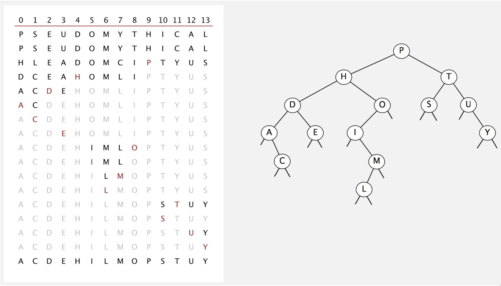

Binary Search Tree
Contents
Binary Search Tree#

\(k\)-ary trees#
In a \(k\)-ary tree, every node has between \(0\) and \(k\) children
In a full (proper) \(k\)-ary tree, every node has exactly \(0\) or \(k\) children
In a complete \(k\)-ary tree, every level is entirely filled, except possibly the deepest, where all nodes are as far left as possible
In a perfect \(k\)-ary tree, every leaf has the same depth and the tree is full
examples#


Binary Tree#

Implementing binary trees#
- Node
\(data\)
\(left\) child
\(right\) child

Tree
\(bst= \{a, b, c, d, e, f\}\)
Binary Search Trees#
A BST is a binary tree
A BST has symmetric order
each node \(x\) in a BST has a key
for all nodes \(y\) in the left subtree of \(x\),
for all nodes \(y\) in the right subtree of \(x\),

(**) assume that the keys of a BST are pairwise distinct

BST Classes#
1class BSTNode {
2
3 private:
4 int data;
5 BSTNode *left;
6 BSTNode *right;
7
8 public:
9 BSTNode(int d);
10 ~BSTNode();
11
12 friend class BSTree;
13
14};
1class BSTree{
2
3 private:
4 BSTNode *root;
5 void destroy(BSTNode *p);
6
7 public:
8 BSTree();
9 ~BSTree();
10 void insert(int d);
11 void remove(int d);
12 BSTNode *search(int d);
13
14};
Search#
Start at root node
If the search key:
a. matches the current node’s key
* then found
b. If search key \(>\) current node’s key
* search on \(right\) child
c. If search key is less than current node’s
* search on \(left\) childStop when current node is NULL (not found)

\(Search\ for\ \ 8\)
insert#
- Perform a Search operation
If found, no need to insert (may increase counter)
If not found, insert node where Search stopped

Try it…#

Remove from BSTs#


Traversals#
Implications#
algorithm preorder (p) {
if (p) {
visit(p)
inorder(p -> left)
inorder(p -> right)
}
}
algorithm postorder (p) {
if (p) {
inorder(p -> left)
inorder(p -> right)
visit(p)
}
}
algorithm inorder (p) {
if (p) {
inorder(p -> left)
visit(p)
inorder(p -> right)
}
}

- How would we:
Destroy a binary tree
Print all elements ascending order
algorithm preorder (p) {
if (p) {
visit(p)
inorder(p -> left)
inorder(p -> right)
}
}

algorithm postorder (p) {
if (p) {
inorder(p -> left)
inorder(p -> right)
visit(p)
}
}

algorithm inorder (p) {
if (p) {
inorder(p -> left)
visit(p)
inorder(p -> right)
}
}

best-case |
worst-case |
average-case |
|
|---|---|---|---|
search |
|||
insert |
|||
remove |
best-case |
worst-case |
average-case |
|
|---|---|---|---|
search |
\(O(1)\) |
\(O(n)\) |
\(O(log\ n)\) |
insert |
\(O(1)\) |
\(O(n)\) |
\(O(log\ n)\) |
remove |
\(O(log\ n)\) |
\(O(n)\) |
\(O(log\ n)\) |
Average-case analysis#
If \(n\) distinct keys are inserted into a BST in random order, expected number of compares for basic operations is
proof: 1-1 correspondence with quick-so


Collections / Dictionaries#
What? |
Sequential (unordered) |
Sequential (ordered) |
BST |
|
|---|---|---|---|---|
search |
search for a key |
\(O(n)\) |
\(O(log\ n)\) |
\(O(h)\) |
insert |
insert a key |
\(O(n)\) |
\(O(n)\) |
\(O(h)\) |
delete |
delete a key |
\(O(n)\) |
\(O(n)\) |
\(O(h)\) |
min/max |
smallest/largest key |
\(O(n)\) |
\(O(1)\) |
\(O(h)\) |
floor/ceiling |
predecessor / successor |
\(O(n)\) |
\(O(log\ n)\) |
\(O(h)\) |
rank |
# of keys less than key |
\(O(n)\) |
\(O(log\ n)\) |
\(O(h)\)** |
(**) requires the use of ‘size’ at every node)